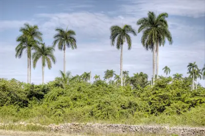

pranet · 出典付きの植物図鑑
Cuban Royal Palm
Roystonea regia (Kunth) O.F.Cook · Arecaceae

Roystonea regia, commonly known as the royal palm, Cuban royal palm, or Florida royal palm, is a species of palm native to Mexico, the Caribbean, Florida, and parts of Central America. A large and attractive palm, it has been planted throughout the tropics and subtropics as an ornamental tree. Although it is sometimes called R. elata, the conserved name R. regia is now the correct name for the species. The royal palm reaches heights from 15–24 m (50–80 ft) tall. Populations in Cuba and Florida were long seen as separate species, but are now considered a single species.
出典: Wikipedia 英語版「Roystonea regia」 · CC BY-SA 4.0
異名: Euterpe jenmanii C.H.Wright, Euterpe ventricosa C.H.Wright, Oenocarpus regius (Kunth) Spreng., Oreodoxa regia Kunth, Palma elata W.Bartram, Roystonea elata (W.Bartram) F.Harper, Roystonea floridana O.F.Cook, Roystonea jenmanii (C.H.Wright) Burret, Roystonea ventricosa (C.H.Wright) L.H.Bailey
同定や利用は自己責任でお願いします。この図鑑だけを根拠に野生の植物を食べないでください。
出典
- 学名: World Flora Online Plant List 2026-06 · CC0 1.0
- 名前: Wikipedia の記事名と Wikidata · CC0 1.0（Wikidata）。記事名は事実
- 説明: Wikipedia 英語版「Roystonea regia」 · CC BY-SA 4.0
- 食用・毒性: World Checklist of Useful Plant Species (Diazgranados et al. 2020, RBG Kew) · CC BY 4.0
- 分布: World Checklist of Vascular Plants (WCVP), RBG Kew, version 2026-06-04 · CC BY 3.0
このページは pranet のデータから自動生成しています。コードは MIT、データは項目ごとのライセンス（説明）。